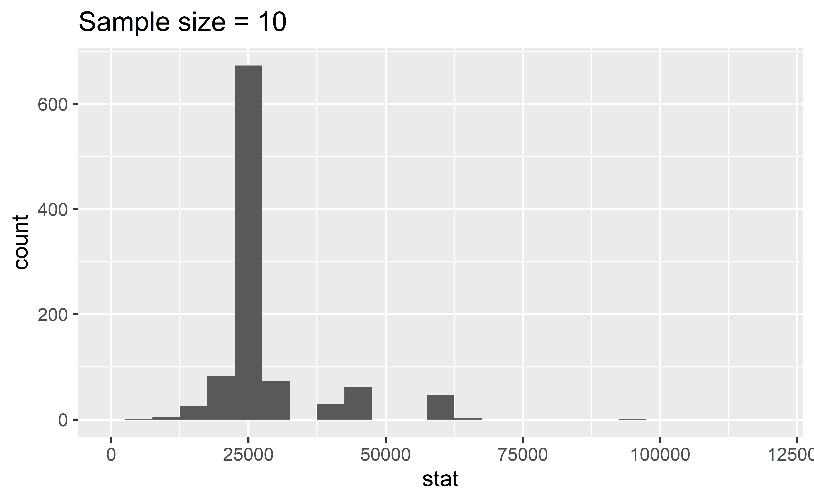
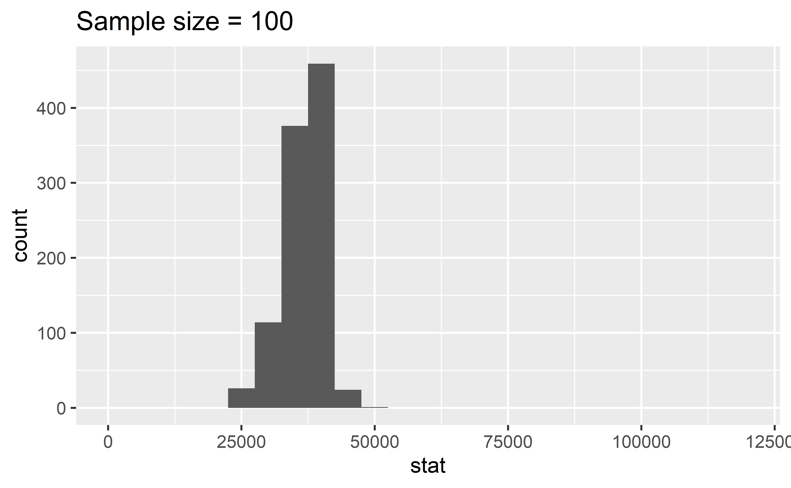
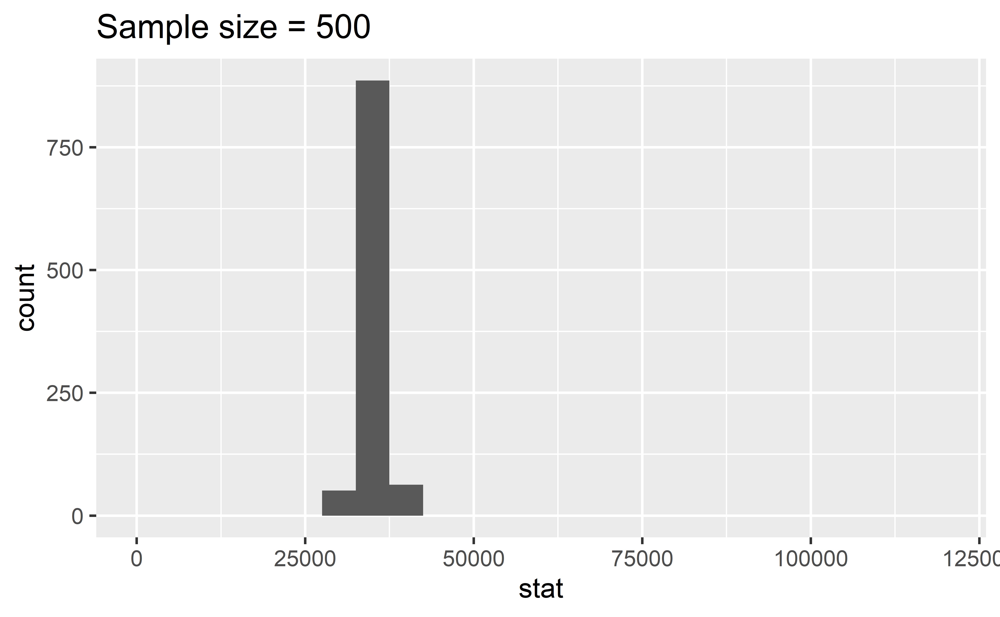
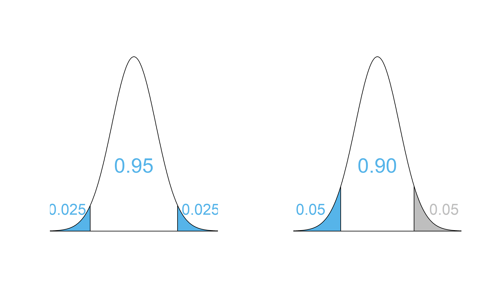
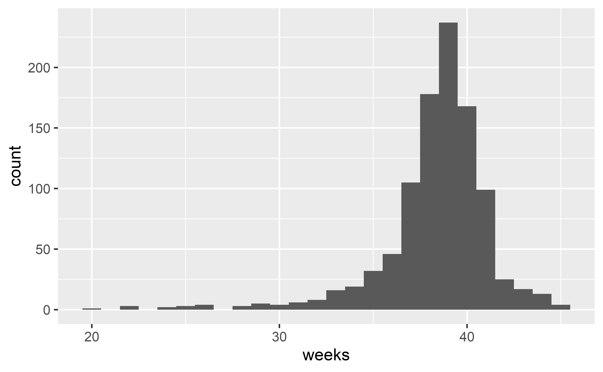
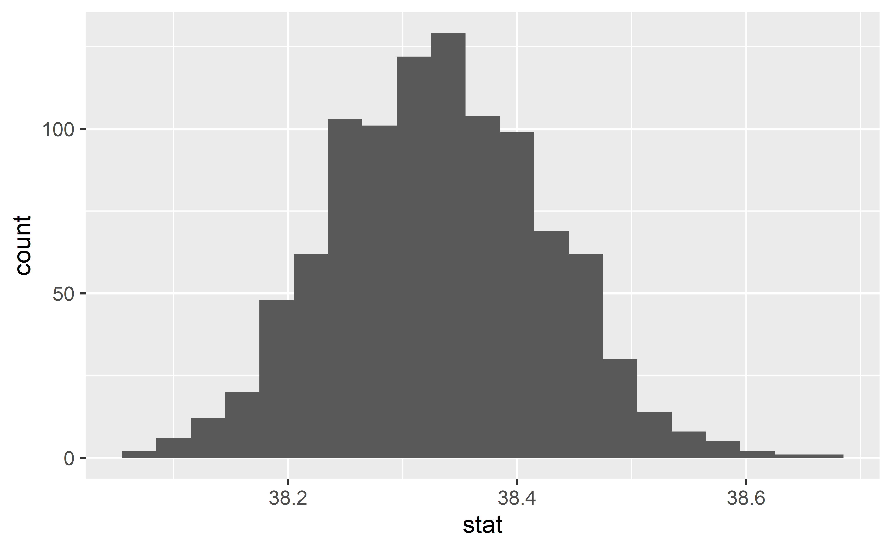
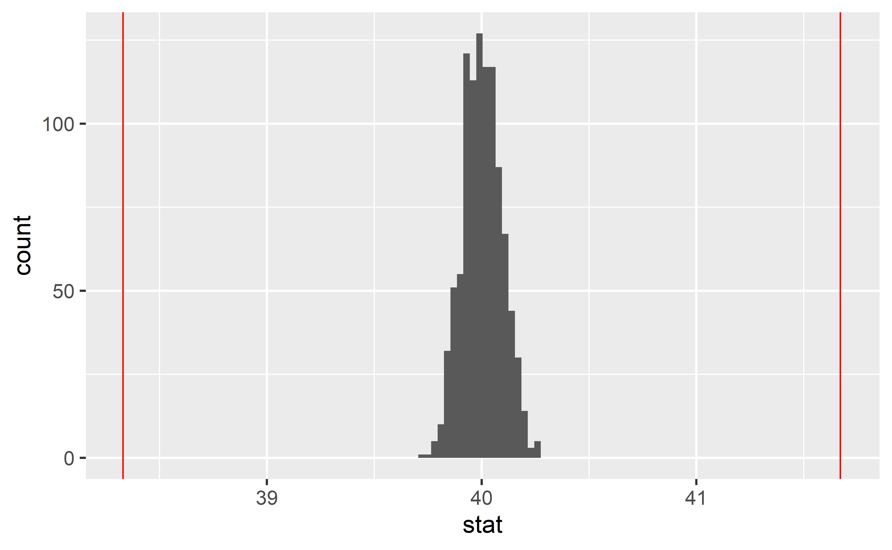

Inference overview
Data Science in a Box
layout: true
class: middle
Inference overview
What do you want to do?
- Estimation -> Confidence interval
- Decision -> Hypothesis test
- First step: Ask the following questions
- How many variables?
- What types of variables?
- What is the research question?
class: middle
Confidence intervals
Confidence intervals
- Bootstrap
- Bounds: cutoff values for the middle XX% of the distribution
- Interpretation: We are XX% confident that the true population parameter is in the interval.
- Definition of confidence level: XX% of random samples of size n are expected to produce confidence intervals that contain the true population parameter.
infer::generate(reps, type = "bootstrap")
Confidence intervals exercises
.question[ Describe the simulation process for estimating the parameter assigned to your team.]
Accuracy vs. precision
.question[ What happens to the width of the confidence interval as the confidence level increases? Why? Should we always prefer a confidence interval with a higher confidence level?]
Sample size and width of intervals

Sample size and width of intervals

Sample size and width of intervals

Equivalency of confidence and significance levels
- Two sided alternative HT with \(\alpha\) \(\rightarrow\) \(CL = 1 - \alpha\)
- One sided alternative HT with \(\alpha\) \(\rightarrow\) \(CL = 1 - (2 \times \alpha)\)

Interpretation of confidence intervals
.question[ Which of the following is more informative: ]
–
.question[ What does your answer tell you about interpretation of confidence intervals for differences between two population parameters?]
class: middle
Hypothesis tests
Hypothesis testing
- Set the hypotheses.
- Calculate the observed sample statistic.
- Calculate the p-value.
- Make a conclusion, about the hypotheses, in context of the data and the research question.
infer::hypothesize(null = "point")andinfer::generate(reps, type = "simulate")orinfer::generate(reps, type = "bootstrap")infer::hypothesize(null = "independence")andinfer::generate(reps, type = "permute")
Hypothesis testing exercises
.question[ Describe the simulation process for tesing for the parameter assigned to your team.]
Testing errors
- Type 1: Reject \(H_0\) when you shouldn’t have
- P(Type 1 error) = \(\alpha\)
- Type 2: Fail to reject \(H_0\) when you should have
- P(Type 2 error) is harder to calculate, but increases as \(\alpha\) decreases
–
.question[ In a court of law]
Probabilities of testing errors
- P(Type 1 error) = \(\alpha\)
- P(Type 2 error) = 1 - Power
- Power = P(correctly rejecting the null hypothesis)
–
.question[ Fill in the blanks in terms of correctly/incorrectly rejecting/failing to reject the null hypothesis:]
class: middle
Examples
What do you want to do?
- Estimation -> Confidence interval
- Decision -> Hypothesis test
- First step: Ask the following questions
- How many variables?
- What type(s) of variable(s)?
- What is the research question?
Data: NC births
The dataset is in the openintro package.
glimpse(ncbirths)Rows: 1,000
Columns: 13
$ fage <int> NA, NA, 19, 21, NA, NA, 18, 17, NA, 20, ~
$ mage <int> 13, 14, 15, 15, 15, 15, 15, 15, 16, 16, ~
$ mature <fct> younger mom, younger mom, younger mom, y~
$ weeks <int> 39, 42, 37, 41, 39, 38, 37, 35, 38, 37, ~
$ premie <fct> full term, full term, full term, full te~
$ visits <int> 10, 15, 11, 6, 9, 19, 12, 5, 9, 13, 9, 8~
$ marital <fct> not married, not married, not married, n~
$ gained <int> 38, 20, 38, 34, 27, 22, 76, 15, NA, 52, ~
$ weight <dbl> 7.63, 7.88, 6.63, 8.00, 6.38, 5.38, 8.44~
$ lowbirthweight <fct> not low, not low, not low, not low, not ~
$ gender <fct> male, male, female, male, female, male, ~
$ habit <fct> nonsmoker, nonsmoker, nonsmoker, nonsmok~
$ whitemom <fct> not white, not white, white, white, not ~Length of gestation

# A tibble: 1 x 7
min xbar med s q1 q3 max
<int> <dbl> <dbl> <dbl> <dbl> <dbl> <int>
1 20 38.3 39 2.93 37 40 45Length of gestation
.question[ Assuming that this sample is representative of all births in NC, we are 95% confident that the average length of gestation for babies in NC is between —- and —- weeks.]
–
(1) How many variables?
–
1 variable: length of gestation, weeks
–
(2) What type(s) of variable(s)?
–
Numerical
–
(3) What is the research question?
–
Estimate the average length of gestation \(\rightarrow\) confidence interval
Simulation for CI for a mean
Goal: Use bootstrapping to estimate the sampling variability of the mean, i.e. the variability of means taken from the same population with the same sample size.
–
Take a bootstrap sample - a random sample taken with replacement from the original sample, of the same size as the original sample.
Calculate the mean of the bootstrap sample.
Repeat steps (1) and (2) many times to create a bootstrap distribution - a distribution of bootstrap means.
Calculate the bounds of the 95% confidence interval as the middle 95% of the bootstrap distribution.
Set a seed first
From the documentation of set.seed:
set.seeduses a single integer argument to set as many seeds as are required. There is no guarantee that different values of seed will seed the RNG differently, although any exceptions would be extremely rare.- Initially, there is no seed; a new one is created from the current time and the process ID when one is required. Hence different sessions will give different simulation results, by default.
set.seed(20180326)Computation for CI for a mean
boot_means <- ncbirths %>%
filter(!is.na(weeks)) %>% # remove NAs
specify(response = weeks) %>%
generate(reps = 1000, type = "bootstrap") %>%
calculate(stat = "mean")
ggplot(data = boot_means, aes(x = stat)) +
geom_histogram(binwidth = 0.03)
Length of gestation
boot_means %>%
summarise(
lower = quantile(stat, 0.025),
upper = quantile(stat, 0.975)
)# A tibble: 1 x 2
lower upper
<dbl> <dbl>
1 38.2 38.5–
Assuming that this sample is representative of all births in NC, we are 95% confident that the average length of gestation for babies in NC is between 38.1 and 38.5 weeks.
Length of gestation, revisited
.question[ The average length of human gestation is 280 days, or 40 weeks, from the first day of the woman’s last menstrual period. Do these data provide convincing evidence that average length of gestation for women in NC is different than 40 weeks? Use a significance level of 5%.]
–
\(H_0: \mu = 40\)
\(H_A: \mu \ne 40\)
–
We just said, “we are 95% confident that the average length of gestation for babies in NC is between 38.1 and 38.5 weeks”.
Since the null value is outside the CI, we would reject the null hypothesis in favor of the alternative.
But an alternative, more direct, way of answering this question is using a hypothesis test.
Simulation for HT for a mean
Goal: Use bootstrapping to generate a sampling distribution under the assumption of the null hypothesis being true. Then, calculate the p-value to make a decision on the hypotheses.
–
Take a bootstrap sample - a random sample taken with replacement from the original sample, of the same size as the original sample.
Calculate the mean of the bootstrap sample.
Repeat steps (1) and (2) many times to create a bootstrap distribution - a distribution of bootstrap means.
Shift the bootstrap distribution to be centered at the null value by subtracting/adding the difference between the center of the bootstrap distribution and the null value to each bootstrap mean.
Calculate the p-value as the proportion of simulations that yield a sample mean at least as extreme as the observed sample mean.
Computation for HT for a mean
boot_means_shifted <- ncbirths %>%
filter(!is.na(weeks)) %>% # remove NAs
specify(response = weeks) %>%
hypothesize(null = "point", mu = 40) %>% # hypothesize step
generate(reps = 1000, type = "bootstrap") %>%
calculate(stat = "mean")
ggplot(data = boot_means_shifted, aes(x = stat)) +
geom_histogram(binwidth = 0.03) +
geom_vline(xintercept = 38.33, color = "red") +
geom_vline(xintercept = 40 + (40 - 38.33), color = "red")
Length of gestation
boot_means_shifted %>%
filter(stat <= 38.33) %>%
summarise(p_value = 2 * (n() / 1000))# A tibble: 1 x 1
p_value
<dbl>
1 0–
Since p-value less than the significance level, we reject the null hypothesis. The data provide convincing evidence that the average length of gestation of births in NC is different than 40.
infer structure
df %>%
specify(response, explanatory) %>% # explanatory optional
generate(reps, type) %>% # type: bootstrap, simulate, or permute
calculate(stat)- Always start with data frame
- Result is always a data frame with a variable called
stat- See the documentation for
calculateto see whichstatistics can be calculated
- See the documentation for
- For hypothesis testing add a
hypothesize()step betweenspecify()andgenerate()null = "point", and then specify the null valuenull = "independence"